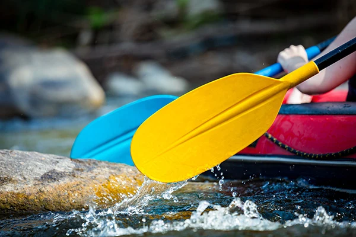

History
Open Waters began with a splash in 2010, evolving into the ultimate rafting crew.
We've created legends, and still chase the wild flow.
In our first year, we only served 50 adventurers, but words of our exceptional service
reached out to great adventurers seeking for a wild, passionate and exciting outdoor adventure.

Over the decade, we've successfully guided more than 10,000 rafters through unforgettable
rafting expeditions. We've weathered challenges, celebrated milestones and, continuosly improved
our services. From humble beginnings to becoming recognized in adventure tourism,
our passion for rivers remains stong.